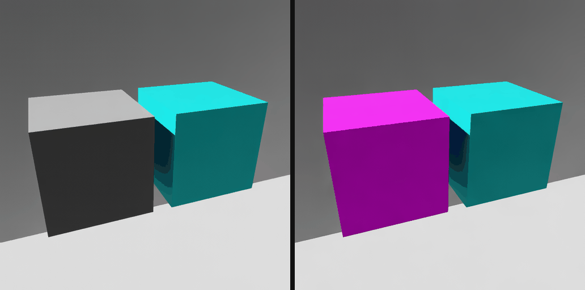

FET006 Materials#
The visual material features: how much of what a viewer sees is shaded by the material the asset authored for a given render context. Display color is measured separately, in FET010 Display Color.
Overview#
A SimReady material can have three surface outputs on one Material prim, one per render context. A render context is the token a renderer uses to pick which shader inside a material it evaluates.
Output |
Shader |
Render context |
Requirement |
|---|---|---|---|
|
UsdPreviewSurface |
universal |
com.nvidia.usd.VM.PS.001 |
|
OmniPBR |
|
VM.MDL.001 |
|
OpenPBR |
|
VM.PBR.001 |
Static validation confirms those outputs are authored, well formed and resolvable, and VM.MAT.001 requires each renderable Gprim to resolve a material. That is a count of prims, and it is exact — it names the prims that resolve nothing.
Each test in this family measures the same property in pixels: what share of what a viewer sees is shaded by the asset’s own material for one render context. A prim count and a pixel share diverge by orders of magnitude on the same defect, depending on how large the offending geometry is, which is why both exist. The pixel measurement also runs inside the renderer, so it reports a binding the renderer resolves differently from what the file declares.
How a Surface Is Measured#
Kit picks one surface per material by render context, through the ordered list in the carb setting /persistent/app/hydra/material/renderContexts. Kit ships ["mdl", "mtlx", ""]. Each test pins that list to the single context it is about and renders the asset twice, a fresh stage each time, the two renders differing only in the strength of one binding:
strongerThanDescendants— a flat magenta control material bound on the asset’s root prim wins everywhere, so every pixel the asset draws comes back magenta. That is the silhouette, and the denominator.weakerThanDescendants— any binding the asset authored wins instead, so magenta is left only where the asset binds nothing.
Coverage is 1 - uncovered / silhouette, counted the same way in both frames, on the same geometry, lighting and camera framing. The floor is min_material_coverage.
Each pass needs its own stage. Binding both strengths in turn on one live stage does not follow USD’s binding-strength rules: with the control bound weaker, apple_a01 — whose single renderable Gprim resolves its own material under every material purpose — came back a blend of its own red and the control’s magenta, putting 40 percent of its silhouette over the magenta threshold. On separate stages the same asset measures full coverage.
One root binding is the whole mechanism. Nothing is authored on the geometry, nothing is de-instanced, and nothing has its visibility toggled, so instance proxies — which cannot be authored on at all — are reached the same way as everything else.
The frame each test reports is captured before the control material goes on, so no reported frame shows anything but the asset’s own materials.
What the Pin Changes, and What It Does Not#
The pinned context decides which surface each covered pixel is shaded by, so the frame a test reports is the surface under test.
It does not decide what counts as covered. A pixel is uncovered when the geometry under it resolves no material of the asset’s at all. A material that has no surface for the pinned context falls back to its universal one and still wins over the control, so it reads as covered — USD resolves the fallback per material, and the control is not part of that.
Whether the surface for a context exists and resolves is com.nvidia.usd.VM.PS.001, VM.MDL.001 and VM.PBR.001, which the validator answers exactly, per material. These tests add the pixel share: how much of what a viewer sees the asset shades itself.
Why the Control Is Magenta#
Nothing in the gate is a colour the renderer chose. The control’s magenta is authored, and the control has a surface on all three render contexts so it resolves under whichever list is pinned — a control with only a UsdPreviewSurface would fall to Kit’s default material under ["mtlx"], which is red.
A gate keyed on a renderer’s own colour fails an asset that happens to be that colour. Kit’s default material is a flat saturated red, and the reference joystick — a red ball on a grey base whose UsdPreviewSurface resolves correctly — measures 28.6 percent red-dominant, still 25.2 percent at a dominance ratio of 4.0. The neutral grey Kit paints for a material with no surface outputs has the same problem one colour over, and grey is more common in content than red.
An authored reference colour also ports. A runtime other than Kit paints unshaded geometry differently, and still resolves an OpenPBR, MDL or UsdPreviewSurface control bound weaker than the asset’s own bindings.
What Each Test Reads#
Each test pins one render context and reads no other. preview_surface_renders reports on an asset with a UsdPreviewSurface and no OpenPBR surface without consulting anything the OpenPBR feature owns.
What the Benchmark Does Not Re-ask#
Presence. com.nvidia.usd.VM.PS.001, VM.MDL.001 and VM.PBR.001 require the surface to exist and resolve, and VM.PBR.003 requires a shader’s info:id to name a declared node. The validator runs first and these tests assume it passed. A benchmark that re-asked would duplicate it.
Whether a bound material evaluated is not a question the pixels can answer. A shader that fails to resolve still wins over the weakly bound control, so it counts as covered and the object draws solid in the renderer’s own colour, which is also what a red asset looks like.
openpbr_renders reads it from the Kit log instead. With --/persistent/app/material/materialx/validate=true, the MaterialX plugin logs [Error] [rtx.materialx.plugin] Unable to create document for material: '<path>' per material it could not build, naming the prim and the reason, and the test fails on any that lie under the asset root. Measured on a cube whose OpenPBR shader names a nodedef nothing declares: coverage 1.0, one unresolved material, failed.
The setting is read at startup, so no test can switch it on — it belongs to how the runner launches Kit. A run without it reports materialx_validation: off and says the question went unanswered, because Kit logs nothing at all for such a material otherwise.
MaterialX is the only context Kit reports this for. mdl_renders and preview_surface_renders have no equivalent switch, so neither claims a clean result it never established.
What This Replaced#
The OpenPBR and MDL tests rendered twice — once pinned to their own context, once to the universal one — and required the two frames to differ. The frames are identical unless the surface under test resolved, because a single-entry list is not “no fallback”: when the pinned context has no output, resolution falls back to the universal context.
That shape had two structural problems.
The universal context is FET_006_STANDARD’s UsdPreviewSurface, so the verdict depended on a different feature. An asset with both, authored so the preview is a faithful stand-in for the final surface, converged and failed. An asset with no preview surface fell through to the default material, differed, and passed.
It also rewarded divergence between two surfaces that are meant to agree.
Which surface a renderer selected cannot be established from pixels when two surfaces produce the same image. That question is the validator’s.
What the Floor Is, and What It Was Set From#
min_material_coverage is 0.98. Measured on Isaac Sim 6.0.1 against the sample content, all three surface tests:
Asset |
Coverage |
Uncovered |
|---|---|---|
The 19 sample assets with geometry to measure |
1.00000 |
0 pixels, every asset, every test |
Two equal cubes, one of them bound to nothing |
0.42419 – 0.43200 |
~192,000 of ~335,000 |
|
0.00000 |
the whole silhouette |
Nothing lands between 0.43 and 1.0. Conformed assets do not merely clear the floor, they leave no pixel uncovered at all, so the number the floor has to sit above is the measurement’s own error. That error is the two passes framing on separate stages: on minimal.usd it counted 71 to 113 more uncovered pixels than the 406,000 pixel silhouette they are divided by, under 0.03 percent, which is why coverage is clamped at zero before it is reported. 0.98 leaves the margin at more than sixty times that and fails a defect covering more than two percent of what a viewer sees.
The three tests measure the same fixture to within nine parts in ten thousand, which is the repeatability of the whole measurement.

Two cubes, one bound to a material and one bound to nothing. Left, the fixture as authored: the unbound cube comes back on the renderer’s default material. Right, the same render with the control bound weaker than the asset’s own bindings — magenta shows exactly where nothing is bound, and the shaded cube is untouched.
What a Passing Family Means#
A reviewer, PM, or OEM can trust that most of what the frame shows is shaded by a material of the asset’s own, rendered through the named context, rather than by the renderer standing in for one.
A pass does not confirm the named surface network produced a correct image, or that it looks right, or that it has its intended textures. An asset whose OpenPBR inputs are still constants renders flat beside its textured MDL surface; that passes, and the difference is outside what these tests judge, which is why the captured frames are kept alongside the numbers.
None of the three tests skips. Planning is feature-gated, so an asset that reaches one of them has claimed that feature.
Tests#
Test |
What It Checks |
Validates |
|---|---|---|
Pinned to |
FET_006_OPENPBR |
|
Pinned to |
FET_006_MDL |
|
Pinned to the universal context: how much of the silhouette resolves a material of the asset’s own, shaded through the UsdPreviewSurface. |
FET_006_STANDARD |
Render Context and Binding Purpose#
Two mechanisms with similar names, doing different jobs. Render context selects which shader inside a material is evaluated. Binding purpose, authored as material:binding:full or material:binding:preview, selects which material is bound to a prim in the first place. This family concerns render context only.
When the Render Context List Has Been Changed#
These tests write the render-context list, so they also restore it. Each one snapshots the live value before its first pin and puts that snapshot back in a finally block, whatever the run does in between.
The key persists across sessions. Kit writes /persistent/* settings to %LOCALAPPDATA%\ov\data\Kit\Isaac-Sim Full\6.0\user.config.json on shutdown, and the benchmark framework’s reset_render_settings() restores its own defaults without unsetting a key a test added, so a value written by one run reaches later sessions and other processes.
A run killed before its finally completes, or an older tool that never restored the key, can leave the list trimmed to one entry. Every material with no output for that entry then resolves through the universal context, or through Kit’s default material if it has no universal output either, so the symptom is assets rendering as their UsdPreviewSurface or as a flat red object in tools that expect their full-fidelity one. The fix is to restore /persistent/app/hydra/material/renderContexts to the shipped ["mdl", "mtlx", ""].
The Cost of This Approach#
Kit reads the render-context list when a stage is attached, and the framework attaches one before the test body runs, so each pass has to write the setting and then create its own stage. Creating that stage leaves the framework’s own handles pointing at the discarded one, and there is no public call to re-seat them, so the tests write to the scene handle’s cached stage, its lighting manager, and the viewport binding directly. If the framework restructures any of those, these tests break at that point. A per-test engine option, or a hook that runs between stage creation and the test body, would remove the need.
Running One of These Tests#
Planning is driven by the asset’s stamped profile. The planner reads the asset’s validation record, resolves the profile named in it, and plans tests for the features the record marks as passed. An asset stamped against a profile that does not have FET_006_OPENPBR does not pick that test up on its own.
--features bypasses the validation gate while the plan is built, so any stage can be tested without being re-stamped first:
simready-benchmark --assets path/to/asset.usd --features FET_006_OPENPBR
--only-features is a different flag: it narrows a plan that already exists.
Not Yet Implemented#
Planned:
openpbr_nodedef_resolves — confirm every authored input is declared by the resolved OpenPBR nodedef (VM.PBR.001, VM.PBR.003). This is the check the static validator skips when the shader registry is unpopulated, so running it in Kit closes a real gap. Out of scope for this suite:
Cross-runtime image comparison. The appearance feature’s acceptance criterion requires consistency across runtimes, but every test in this suite declares a single engine tag and there is no golden-image comparison here. NVIDIA’s internal
openpbr-tests-internalsuite already renders MaterialX cases through several backends and image-diffs them in CI. Render correctness is better consumed from there than rebuilt here.
Relationship to the Feature#
This family validates the runtime behavior described by FET006 Standard Materials and FET006 MDL Materials.